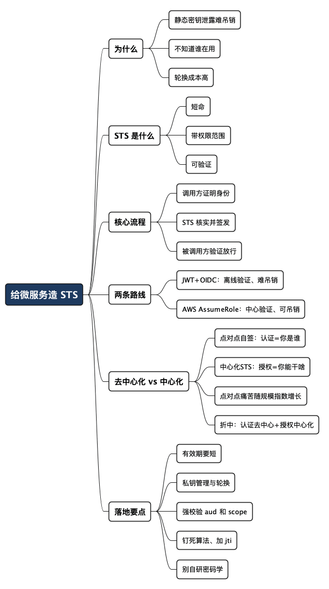

给微服务造一个 STS：像 AWS 一样发放临时凭证
Posted on 六 01 8月 2026 in Tech
| Abstract | 给微服务造一个 STS：像 AWS 一样发放临时凭证 |
|---|---|
| Authors | Walter Fan |
| Category | learning note |
| Status | v1.0 |
| Updated | 2026-08-02 |
| License | CC-BY-NC-ND 4.0 |
先说个我见过太多次的场景。
两个微服务要互相调用，团队一合计：“简单，配个 API Key 呗。” 于是 A 服务的配置文件里躺着一串 api-key: 8f3c...，B 服务这边硬编码了同一串去做比对。上线那天风平浪静。半年后有人把配置提交进了 Git，又过了三个月这个 key 泄露了——但没人敢删，因为不知道还有哪几个服务在偷偷用它。最后的处理方式往往是：假装没看见。
这就是长期静态凭证（long-lived static credential）的老毛病：发出去容易，收回来要命。它像一把配了无数副的家门钥匙，你既不知道钥匙在谁手里，也不敢随便换锁。
AWS 早就想通了这件事，给出的答案叫 STS（Security Token Service，安全令牌服务）：不发长期钥匙，只发短命的、带权限范围的、能自动过期的临时凭证。这篇文章想聊的就是——咱们能不能给自己的微服务也造一个这样的 STS？造的时候有哪两条主流路线，各自的坑在哪？
- 想跳过背景直接看代码的，翻到“最小实现”那一节。
- 想搞清楚该选 JWT 还是 AWS 式方案的，重点看“两条路线对比”那张表。
- 好奇“服务之间自己商定、自己签发”这种做法行不行的，看第 4 节“去中心化 vs 中心化”。
提示：本文出现的 JWT、OIDC、JWKS、mTLS 这些词，第一次出现时我都会用一句大白话解释。不写后端的读者也能顺下来，代码块可以跳过。
1. 先把 STS 是什么讲清楚
AWS STS 本质上就干一件事：你拿一个身份证明来，我给你换一张有时效、有权限边界的临时通行证。
拿人话打个比方。你去大公司谈事，前台不会把大楼的万能钥匙给你，而是刷了你的身份证以后，打印一张访客贴纸：上面写着你的名字、能去的楼层（权限范围）、有效期到今天下班（过期时间）。贴纸丢了也不怕，明天就失效了;你想去没写的楼层，闸机直接拦下。
STS 发的临时凭证，就是这张访客贴纸。它有三个关键属性，缺一不可：
- 短命（short-lived）：几分钟到几小时就过期。泄露了也只是“这几分钟有风险”，而不是“这辈子都有风险”。
- 带范围（scoped）：明确写清楚“能调哪些服务、能做哪些操作”。不是万能钥匙。
- 可验证（verifiable）：拿到凭证的一方，能独立确认它是真的、没被篡改、没过期——最好还不用每次都去问签发方。
对照一下静态凭证，差别一目了然：
| 维度 | 静态凭证（API Key / 密码） | STS 临时凭证 |
|---|---|---|
| 生命周期 | 长期有效，直到人工吊销 | 分钟级/小时级自动过期 |
| 泄露后果 | 长期暴露，且难以定位使用方 | 窗口极小，很快自动失效 |
| 权限粒度 | 往往一把钥匙走天下 | 每次按需授权，最小权限 |
| 轮换成本 | 高，牵一发动全身 | 天然轮换，无需协调 |
| 审计 | 难追踪谁在用 | 每次签发都有记录 |
一句话：静态凭证是“信任这把钥匙”，STS 是“信任这个签发中心”。 信任从“分散的秘密”收敛到了“一个中心 + 一套可验证的规则”。
2. STS 的核心流程：三个角色，一条主线
不管用哪条技术路线，STS 的骨架都是同一个：调用方先证明自己的身份，STS 核实后签发临时凭证，被调用方验证凭证后放行。
三个角色：
- 调用方（Client Service）：想去调别人的服务，比如订单服务想调库存服务。
- STS（令牌服务）：中央的“发证机关”。
- 被调用方（Resource Service）：提供资源的服务，负责验证凭证。
下面这张时序图把主线画清楚了：
sequenceDiagram
participant C as 订单服务<br/>(Client)
participant S as STS<br/>(令牌服务)
participant R as 库存服务<br/>(Resource)
C->>S: 1. 我是订单服务，凭初始身份<br/>请给我一张调库存的临时凭证
activate S
Note over S: 2. 核实身份 + 检查授权策略<br/>(订单服务能不能调库存？)
S-->>C: 3. 返回临时凭证<br/>(短命 + 带范围 + 已签名)
deactivate S
C->>R: 4. 带上临时凭证，请求库存数据
activate R
Note over R: 5. 验证凭证<br/>(签名对不对？过期没？范围够不够？)
R-->>C: 6. 校验通过，返回数据
deactivate R
真正拉开两条路线差距的，是第 3 步“凭证长什么样”和第 5 步“怎么验证”。这也是接下来对比的重点。
3. 两条路线对比：JWT+OIDC vs AWS 式 AssumeRole
造 STS 主要有两条成熟路线。它们目标一样，气质却相当不同。
路线 A：JWT + OIDC（现代服务间认证的主流）
先解词。JWT（JSON Web Token） 是一段自带签名的 JSON，里面写着“我是谁、能干啥、什么时候过期”;OIDC（OpenID Connect） 是一套围绕 JWT 的标准协议;JWKS（JSON Web Key Set） 是签发方公开的一组公钥，验证方用它来核对签名。
它的精髓在于自包含 + 离线验证。凭证本身就带着所有信息和签名，被调用方只要拿到 STS 的公钥（通过 JWKS 端点，一天拉一次缓存起来即可），就能独立验证这个 token，完全不需要每次请求都去问 STS。
一个 JWT 解开来大致长这样（中间是 payload，也就是“声明 claims”）：
{
"iss": "https://sts.internal.mycompany.com", // 签发方
"sub": "svc-order", // 主体：订单服务
"aud": "svc-inventory", // 受众：只能给库存服务用
"scope": "inventory:read inventory:reserve", // 权限范围
"exp": 1754082000, // 过期时间戳（比如 5 分钟后）
"iat": 1754081700, // 签发时间
"jti": "a1b2c3d4" // 唯一 ID，用于审计/吊销
}
- 优点：验证是离线的，STS 不会成为每次调用的性能瓶颈;跨语言支持极好;天然适配 API Gateway、Service Mesh。
- 代价：签出去的 token 在过期前很难提前吊销（因为验证方根本不问 STS）。所以有效期一定要短。想要能吊销，就得再加一层黑名单，等于牺牲了“离线”的好处。
路线 B：AWS 式 AssumeRole（临时访问密钥）
AWS STS 走的是另一条路。它发的不是一个自包含 token，而是一组临时的访问密钥：AccessKeyId + SecretAccessKey + SessionToken，外加一个过期时间。调用方拿着这组密钥,用类似 SigV4 的方式给每个请求算一个签名。
关键区别在验证方式：AWS 是中心化验证——请求打到 AWS 服务后，服务在后台向 STS/IAM 核对这组密钥的有效性。好处是能立刻吊销（中心说了算），代价是验证路径上多了一次中心依赖。
- 优点：可以做到即时吊销;权限模型（Role/Policy）非常成熟精细;请求本身带签名，能防重放、防篡改。
- 代价：验证方对中心有依赖;SigV4 那套签名算法实现起来比“验个 JWT 签名”复杂不少;跨语言实现成本更高。
原理加餐：SigV4 到底怎么签（不想深究可跳过）
上面反复提到 SigV4，这里补一段它的原理——它是理解“为什么 AWS 式方案又安全又麻烦”的钥匙。SigV4（Signature Version 4）不是把密钥塞进请求，而是用密钥给请求算一个指纹（HMAC 签名），两端各算一遍，对得上才放行。密钥本身从不上网。
它分四步，核心思想是层层派生、层层收窄：
-
构造 Canonical Request（规范请求）：把 HTTP 方法、URI、query、参与签名的 header、以及请求体的 SHA256 哈希按固定格式拼成一个字符串。请求体进签名，意味着 body 被改一个字节，签名立刻对不上——这是防篡改。
-
构造 String to Sign（待签字符串）：把上一步哈希后，套上算法、时间戳、和 Credential Scope（日期/区域/服务）。时间戳是防重放的关键——服务端只接受一个短窗口（默认 15 分钟）内的请求，截获的旧请求重放不了。
-
派生 Signing Key（最精髓的一步）：不直接用
SecretAccessKey签，而是拿它当种子逐层 HMAC 派生：
text
kDate = HMAC("AWS4" + SecretKey, 日期)
kRegion = HMAC(kDate, 区域)
kService = HMAC(kRegion, 服务)
kSigning = HMAC(kService, "aws4_request")
这么绕的意义在于：派生出的 kSigning 只对“这一天、这个区域、这个服务”有效。即使它泄露，攻击者也只能在这个极窄的格子里作案，第二天就废了——和 STS“短命凭证”缩小爆炸半径的思路一脉相承。
- 计算签名：
signature = HMAC(kSigning, StringToSign)，连同用哪个 key、签了哪些 header 一起塞进Authorization头。
服务端收到后，用请求里的原始内容把这四步重算一遍，自己算出的签名和请求里带的对比，一致才放行，顺带检查时间戳没超窗口。一张表看清 SigV4 每个设计在防什么：
| 机制 | 防的是 |
|---|---|
| 请求体哈希进签名 | 篡改（改 body 签名就变） |
| 时间戳 + 15 分钟窗口 | 重放 |
| 密钥不进请求、只传签名 | 密钥泄露 |
| Signing Key 按日期/区域/服务派生 | 缩小泄露后的爆炸半径 |
| HMAC-SHA256 | 伪造（没密钥算不出正确签名） |
这也解释了那句“SigV4 比验个 JWT 签名复杂不少”——光是第 1 步的规范化（header 排序、URL 编码、大小写全要统一），客户端和服务端稍有不一致就签不对，是出了名的容易翻车。JWT 那边呢？调个库验一下公钥签名就完事了。安全性上 SigV4 更硬（天然绑请求内容、防重放），但工程成本也实打实更高。
光看文字容易犯迷糊，下面这段 Python 把四步完整跑一遍。为了能验证结果，我直接用了 AWS 官方文档给出的测试向量（AKIDEXAMPLE 那把著名的示例密钥），算出来的签名和官方文档里的完全一致——你可以复制下来直接跑：
import hashlib
import hmac
def _hmac(key: bytes, msg: str) -> bytes:
"""一次 HMAC-SHA256，返回原始字节。"""
return hmac.new(key, msg.encode("utf-8"), hashlib.sha256).digest()
def derive_signing_key(secret_key, date_stamp, region, service):
"""Step 3：逐层派生签名 key，把作用域收窄到某天/某区域/某服务。"""
k_date = _hmac(("AWS4" + secret_key).encode("utf-8"), date_stamp)
k_region = _hmac(k_date, region)
k_service = _hmac(k_region, service)
return _hmac(k_service, "aws4_request")
def sigv4(secret_key, region, service, amz_date, date_stamp):
# Step 1：构造 Canonical Request（请求体也进签名 -> 防篡改）
canonical_headers = (
"content-type:application/x-www-form-urlencoded; charset=utf-8\n"
"host:iam.amazonaws.com\n"
f"x-amz-date:{amz_date}\n"
)
signed_headers = "content-type;host;x-amz-date"
payload_hash = hashlib.sha256(b"").hexdigest() # GET 请求，空 body
canonical_request = "\n".join([
"GET", # HTTP 方法
"/", # URI
"Action=ListUsers&Version=2010-05-08", # query（按字母序）
canonical_headers,
signed_headers,
payload_hash,
])
# Step 2：构造 String to Sign（amz_date 进签名 -> 防重放）
credential_scope = f"{date_stamp}/{region}/{service}/aws4_request"
string_to_sign = "\n".join([
"AWS4-HMAC-SHA256",
amz_date,
credential_scope,
hashlib.sha256(canonical_request.encode()).hexdigest(),
])
# Step 3 + 4：派生 key，再用它签
signing_key = derive_signing_key(secret_key, date_stamp, region, service)
return hmac.new(signing_key, string_to_sign.encode(), hashlib.sha256).hexdigest()
signature = sigv4(
secret_key="wJalrXUtnFEMI/K7MDENG+bPxRfiCYEXAMPLEKEY", # AWS 官方示例密钥
region="us-east-1",
service="iam",
amz_date="20150830T123600Z",
date_stamp="20150830",
)
print(signature)
# 输出：5d672d79c15b13162d9279b0855cfba6789a8edb4c82c400e06b5924a6f2b5d7
# 与 AWS 官方文档给出的签名完全一致
跑通它你就摸清了 SigV4 的全部骨架。真实项目里当然直接用 botocore/boto3 里成熟的 SigV4Auth，别自己手搓——这段代码是拿来“看懂原理”的，不是拿来上生产的。
一张表看清怎么选
| 维度 | JWT + OIDC | AWS 式 AssumeRole |
|---|---|---|
| 凭证形态 | 自包含的签名 token | 临时密钥 + 每次请求签名 |
| 验证方式 | 离线（用公钥验签） | 中心化（向 STS/IAM 核对） |
| 提前吊销 | 难（需额外黑名单） | 容易（中心即时生效） |
| 性能 | STS 不在调用热路径上 | 验证依赖中心 |
| 实现复杂度 | 低（各语言库成熟） | 高（签名算法 + 中心交互） |
| 适合场景 | 内部微服务、Service Mesh、网关 | 需强吊销/强审计的高敏感场景 |
我的经验判断，供参考，不是教条：
- 绝大多数内部微服务，选 A（JWT+OIDC）。 把有效期压到 5～15 分钟，吊销这件事基本就不重要了——反正很快自己过期。简单、快、跨语言，收益最高。
- 只有当你确实需要“1 秒内让某个凭证立刻失效”（比如涉及资金、或合规硬要求），才值得为路线 B 的复杂度买单。
- 别想着“既要 A 的离线性能，又要 B 的即时吊销”。这俩本质是矛盾的，硬凑就是给自己挖坑。想清楚你到底更怕哪一个：更怕慢，还是更怕收不回来。
4. 一个高频的“聪明做法”：服务之间自己签发、自己商定
上面聊的都是“有个中心 STS 发证”。但实践里有一种更省事、看起来也更优雅的做法，很多团队第一反应就是它：
A 服务用自己的私钥签发一个 JWT，B 服务加载 A 的公钥来验证。A 和 B 之间私下商定调用关系和权限，不需要任何中心。
第一眼看，这太香了：没有中心依赖，没有单点，A 想调 B，把公钥给 B 配上就行。省了搭 STS 的活，还避免了“中心挂了全公司瘫痪”的噩梦。
但这条路走远了会长出一堆刺。咱们把它和中心化 STS 掰开揉碎比一比。
4.1 先看它到底在“签”什么
关键要看清一件事：这种模式下，A 签的 JWT，主体（sub）是 A 自己，而不是“A 被授权去调 B”这件事。
{
"iss": "svc-order", // 我是订单服务
"sub": "svc-order", // 主体还是我自己
"aud": "svc-inventory", // 想调库存服务
"exp": 1754082000
}
换句话说，这张票的含义是 “我 A 说我是 A”。B 验证通过，只能证明“对面确实是 A”（因为只有 A 有那把私钥）。至于 A 到底有没有资格调 B、能调 B 的哪些接口——这张票本身说了不算，得靠 B 那边另外配一套规则。
而中心化 STS 签的票，主体是“A 被授权做某事”，含义是 “中心作证：A 可以在 5 分钟内以 read 权限调 B”。授权信息直接写在票里，B 照着执行即可。
这个区别是后面所有差异的根源：点对点模式做的是“身份认证（你是谁）”，中心化 STS 做的是“授权（你能干啥）”。 很多团队用点对点方案时，误把“认证”当成了“授权”，坑就是从这儿埋下的。
4.2 五个会慢慢发作的问题
问题一：授权规则散落在 N 个地方，没人说得清全局。
A 和 B 商定一套，A 和 C 商定一套，D 和 B 又商定一套……当你有 30 个服务、互相调用一两百条边时，“谁能调谁、能调什么”这张全局授权图，不存在于任何一个地方，只散落在各个服务的配置和几个人的脑子里。有人问“支付服务现在被哪些服务调用、各自什么权限”，你答不上来。中心化 STS 天然就是这张图的唯一权威。
问题二：公钥分发变成 O(N²) 的运维噩梦。
B 要验 A 的票，就得有 A 的公钥;B 还被 C、D、E 调用，就得存下所有调用方的公钥。每加一个新服务、每轮换一次密钥，都要去挨个通知下游更新公钥。服务少时没感觉，服务一多，光是“谁该拿谁的公钥”就够运维喝一壶。中心化 STS 只有一个签发方，B 只需信任一把公钥（或一个 JWKS 端点），复杂度从 N² 降到 N。
问题三：密钥轮换和吊销几乎做不动。
A 的私钥要是泄露了，或者到了该轮换的时候，你得协调所有信任 A 的下游同步更换公钥——而且你还不一定知道到底有哪些下游信任它（回到问题一）。这个协调过程很容易出现“换到一半，一部分服务验不过 A 的新票”的窗口期。中心化模式下，轮换只发生在 STS 一处，通过 JWKS 同时暴露新旧公钥就能平滑过渡。
问题四：权限变更要改代码、发版、上线。
想收回 A 调 B 的某个权限？在点对点模式里，这条规则写在 B（或 A）的代码/配置里，你得改它、测它、发布它。授权和业务代码绑死了。中心化 STS 里，权限是一份独立的策略（policy），改策略不用动业务服务，也不用重新发版。
问题五：审计是拼图，不是全景。
“上周谁调用过账户服务？”——点对点模式下，这个答案散在各个调用方和被调方的日志里，得把碎片捞出来拼。中心化 STS 每签发一张票都留一条记录，天然就是一本统一的授权流水账，出安全事件时这东西价值千金。
4.3 一张表对照
| 维度 | 点对点自签自验 | 中心化 STS |
|---|---|---|
| 票据的语义 | “我是 A”（认证） | “A 被授权做某事”（授权） |
| 授权规则位置 | 散落在各服务，无全局视图 | 集中在中心，唯一权威 |
| 信任关系复杂度 | O(N²)，两两商定与配公钥 | O(N)，都只信一个中心 |
| 密钥轮换/吊销 | 要协调所有下游，容易出窗口期 | 中心一处搞定，JWKS 平滑过渡 |
| 权限变更 | 改代码/配置 + 发版 | 改策略即可，不动业务服务 |
| 审计 | 碎片化，需拼日志 | 统一流水账 |
| 单点风险 | 无中心（优点） | 中心需高可用（要花力气保障） |
| 上手成本 | 低，几个服务时很爽 | 高，要先搭中心 |
4.4 那到底该怎么选？
别把它当成非黑即白。我的判断是：
- 服务少（个位数）、团队小、边界清楚：点对点自签自验完全够用，别为了“架构正确”硬上一个 STS，那是过度设计。这个阶段它的“省事”是真省事。
- 服务开始变多、跨团队、有合规/审计要求：授权必须收敛到中心。点对点模式的痛苦不是一开始就疼，而是随规模指数级增长——等你疼到受不了再迁，成本比一开始就上中心高得多。
- 一个折中的中间态：认证去中心化（用 mTLS 或平台身份确认“你是谁”），授权中心化（用 STS 或统一策略引擎决定“你能干啥”）。 这恰恰对应 4.1 里那个核心区分——把两件事分开做，各用最合适的方案。SPIFFE/SPIRE + OPA（策略引擎）这类组合走的就是这条路。
一句话记住它们的分界：
点对点自签，本质是“我们俩私下说好”;中心化 STS，本质是“大家都认同一个裁判”。 团队小的时候，私下说好最高效;团队一大，你会开始怀念那个能一锤定音、还留着记录的裁判。
当你发现有异常请求想追踪，当你想检查服务之间的调用关系是否合理合规，当你想替换 private/public key时，你就知道痛在哪里了。
5. 最小实现：用 Python 撸一个 JWT 版 STS
光说不练假把式。下面用 Python 实现路线 A 的核心：STS 签发 token + Resource 服务验证 token。为了聚焦，我把身份认证简化了（真实场景里第一步的“证明你是谁”可以用 mTLS、Kubernetes ServiceAccount Token 等，后面会提），重点展示签发和验证这两块骨头。
用的是业界常用的 PyJWT 库（pip install "pyjwt[crypto]"）。
5.1 STS：签发临时凭证
import time
import uuid
import jwt # PyJWT
ISSUER = "https://sts.internal.mycompany.com"
def issue_token(private_key: str, subject: str, audience: str, scope: str) -> str:
"""由 STS 调用，为某个调用方签发一张短命凭证。
private_key: STS 的私钥（PEM 字符串），全公司只有 STS 持有
subject: 调用方身份，如 "svc-order"
audience: 目标服务，如 "svc-inventory"
scope: 本次授权的权限范围，如 "inventory:read"
"""
now = int(time.time())
claims = {
"iss": ISSUER,
"sub": subject,
"aud": audience,
"scope": scope,
"iat": now,
# 关键：有效期只有 5 分钟。这是路线 A 安全性的命根子。
"exp": now + 5 * 60,
"jti": uuid.uuid4().hex, # 唯一 ID，方便审计
}
# 用 RS256（RSA + SHA256）非对称签名：
# STS 用私钥签，任何人用公钥就能验，不用共享秘密。
return jwt.encode(claims, private_key, algorithm="RS256")
这里我特意用了 RS256（非对称签名） 而不是 HS256（对称）。原因很实在：对称签名意味着验证方也得拿到那把签名密钥——那验证方岂不是也能伪造 token？非对称的好处是 STS 用私钥签、大家用公钥验，私钥永远不出 STS 的门。这就是“信任收敛到中心”能成立的技术前提。
5.2 Resource 服务：离线验证凭证
import jwt # PyJWT
ISSUER = "https://sts.internal.mycompany.com"
class TokenError(Exception):
pass
def verify_token(public_key: str, token: str, expected_aud: str, required_scope: str) -> dict:
"""由库存服务调用，验证收到的凭证。
public_key: STS 的公钥（PEM 字符串，通过 JWKS 端点拉取并缓存，无需每次请求都拉）
token: HTTP 头里带过来的 token
expected_aud: 本服务的身份，如 "svc-inventory"
required_scope: 本次操作需要的权限，如 "inventory:reserve"
"""
try:
claims = jwt.decode(
token,
public_key,
# 关键：钉死算法，只接受 RS256，拒绝 alg:none 和对称算法，
# 否则有经典的算法混淆攻击。
algorithms=["RS256"],
issuer=ISSUER,
audience=expected_aud, # 确认这张票是发给“我”的
# decode 会自动校验签名、exp 过期、iat、iss、aud
options={"require": ["exp", "iss", "aud", "sub"]},
)
except jwt.InvalidTokenError as e:
raise TokenError(f"invalid token: {e}") from e
# 库不会自动校验 scope，得我们手动确认权限范围够不够
granted = claims.get("scope", "").split()
if required_scope not in granted:
raise TokenError("insufficient scope")
return claims
请注意验证里做的四道检查，一道都不能少，这也是新手最容易漏的地方：
- 签名对不对（用 STS 公钥验）——防伪造、防篡改。
- 过期没有（校验
exp）——短命的意义所在。 - 是不是发给我的（校验
aud）——防止一张发给别人的票被拿来用（叫“令牌重放/串用”）。 - 权限够不够（校验
scope）——最小权限落地。
我见过不少“验了签名就放行”的实现，第 3、4 步全省了。结果就是：一张发给日志服务的 token，被人拿去调了支付服务，签名还完全合法。验签只是第一关，不是全部。
5.3 第一步的“身份证明”从哪来？
上面我把“调用方怎么向 STS 证明自己”简化了。生产环境里，这一步通常靠平台能力，别自己发明：
- Kubernetes 环境：用 ServiceAccount 的 Projected Token，STS 校验它就能确认调用方是哪个服务。
- mTLS（双向 TLS）：调用方和 STS 建立连接时双方都出示证书，STS 从客户端证书里读出身份。这也是 SPIFFE/SPIRE 那套工作负载身份的基础。
- 别用：写死在配置里的静态密钥去换 token——那等于绕了一圈又回到了静态凭证的老问题。
6. 上线前的自查清单（收藏版）
真要把自研 STS 推上生产，下面这些坑我替你先踩了：
- 有效期务必短。路线 A 的安全性全押在这上面。5～15 分钟是常见区间，别图省事设成 24 小时。
- 私钥单独管理，并支持轮换。私钥放密钥管理服务（如 Vault、KMS、公司内部的密钥管理服务），别进代码库。JWKS 里同时暴露新旧两把公钥，才能平滑换钥。
- 强制校验
aud和scope。这是防“票据串用”和落地最小权限的关键，别只验签名。 - 算法要钉死。验证时强制指定 RS256，拒绝
alg: none和对称算法，否则有经典的算法混淆攻击。 - 给 token 加
jti并记录审计日志。谁、什么时候、拿到了调哪个服务的票，出事时能查。 - 想清楚吊销策略。如果业务真需要即时吊销，要么上短黑名单，要么老实选路线 B，别指望 JWT 自己能被“召回”。
- 别自己发明加密。签名、密钥、协议都用成熟标准库和方案，STS 的价值在“流程和策略”，不在“自研密码学”。
一句话总结这套做法：
不发永久钥匙，只发访客贴纸;信任不押在分散的秘密上，而是收敛到一个中心加一套可验证的规则。 边界是：JWT 路线换来了性能和简单，代价是放弃了即时吊销——想清楚你更怕慢还是更怕收不回。
一个不依赖具体平台的验收清单
做最小 PoC 时，建议把签发、验证和轮换分开测试，而不是只拿一枚 Token 请求一次接口。至少覆盖：过期 Token、错误的 aud、缺失的 scope、旧公钥仍在缓存、签发私钥轮换，以及调用方身份本身失效。
比较 JWT+OIDC 和 AssumeRole 类方案时，还要把两条路径拆开看：谁负责证明调用方身份，谁负责签发凭证，业务服务收到请求后如何验证，权限变更多久生效。签发中心是否高可用，和每次业务请求是否必须同步访问签发中心，是两个问题。 这个区分一旦写清楚，方案比较就不容易被“中心化/去中心化”的口号带偏。
最后一句
微服务之间的信任，说到底是个“钥匙管理”问题。静态密钥的舒服是当下的，痛苦是未来的——泄露那天你才发现，最难的不是换锁，是搞清楚到底谁还在用这把钥匙。
STS 的思路，本质上是把“我信任你手里那串秘密”升级成了“我信任那个发证的中心，以及它盖的章”。这不只是安全设计，更像一种做系统的态度：与其到处埋下将来要还的债，不如从一开始就让每一份授权都自带保质期。
你们的微服务之间，现在还在传那串永不过期的 key 吗？
全文思维导图
@startmindmap
<style>
mindmapDiagram {
node {
BackgroundColor #F8F9FA
RoundCorner 10
Padding 10
FontSize 13
}
:depth(0) {
BackgroundColor #1E3A5F
FontColor white
FontSize 18
FontStyle bold
}
:depth(1) {
FontSize 15
FontStyle bold
}
:depth(2) {
FontSize 13
}
}
</style>
* 给微服务造 STS
** 为什么
*** 静态密钥泄露难吊销
*** 不知道谁在用
*** 轮换成本高
** STS 是什么
*** 短命
*** 带权限范围
*** 可验证
** 核心流程
*** 调用方证明身份
*** STS 核实并签发
*** 被调用方验证放行
** 两条路线
*** JWT+OIDC：离线验证、难吊销
*** AWS AssumeRole：中心验证、可吊销
** 去中心化 vs 中心化
*** 点对点自签：认证=你是谁
*** 中心化STS：授权=你能干啥
*** 点对点痛苦随规模指数增长
*** 折中：认证去中心+授权中心化
** 落地要点
*** 有效期要短
*** 私钥管理与轮换
*** 强校验 aud 和 scope
*** 钉死算法、加 jti
*** 别自研密码学
@endmindmap

参考资料
AWS STS 与 SigV4
- AWS Signature Version 4 for API requests —— SigV4 签名流程官方说明
- Elements of an AWS API request signature —— 签名各字段（Credential Scope、SignedHeaders 等）详解
- Authenticating Requests (AWS Signature Version 4) —— 以 S3 为例的完整签名计算示例
- AssumeRole - AWS STS API Reference —— AWS 式临时凭证的核心 API
JWT / OIDC / JWKS 标准
- RFC 7519 - JSON Web Token (JWT) —— JWT 标准
- RFC 7517 - JSON Web Key (JWK/JWKS) —— 公钥集合（JWKS）标准
- OpenID Connect Core 1.0 —— OIDC 规范
工作负载身份（认证去中心化 + 授权中心化的折中路线）
- SPIFFE / SPIRE 官方文档 —— 用 mTLS 做工作负载身份
- Implement SPIFFE/SPIRE authorization on Amazon EKS —— SPIFFE/SPIRE 与 AWS 结合的实战
实现库
- PyJWT —— 本文 JWT 示例代码所用的 Python 库
- AWS Signature Version 4 示例代码（含 Python） —— 官方各语言 SigV4 签名示例
本作品采用知识共享署名-非商业性使用-禁止演绎 4.0 国际许可协议进行许可。 欢迎在我的个人网站 https://www.fanyamin.com 访问原文并评论。